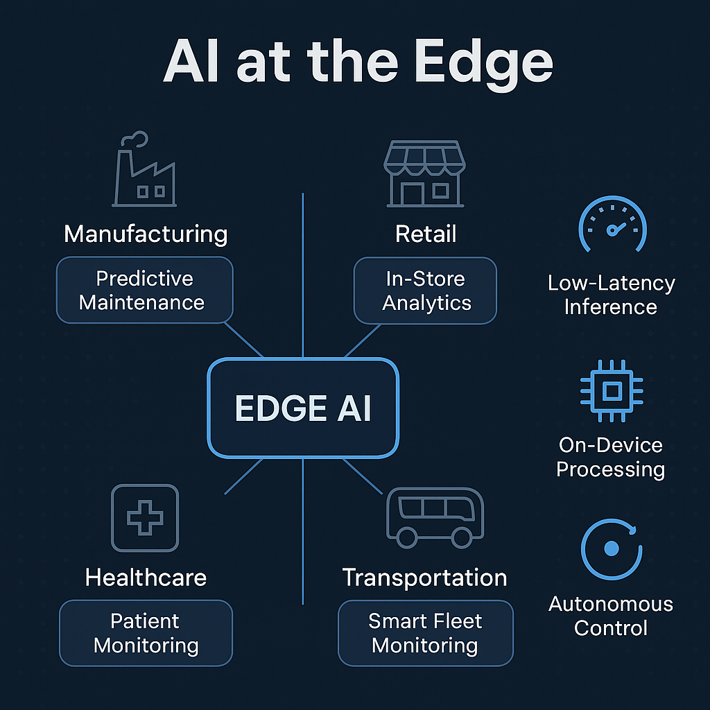

Executive Summary
In a world where milliseconds matter and bandwidth costs climb, centralized AI alone is no longer enough. Edge AI brings decision-making closer to where data is generated—factories, hospitals, retail stores, and moving vehicles.
Pragyametrics delivers turnkey Edge AI solutions that combine low-latency decisioning, real-time analytics, and autonomous control—transforming operational frontlines into intelligent, self-adaptive systems.
What Is Edge AI?
Edge AI is the deployment of artificial intelligence models directly on edge devices—sensors, gateways, or microcontrollers—without needing constant connection to the cloud.
Think of it as embedding a brain inside every machine, so it can sense, decide, and act—instantly.
Why Businesses Are Moving to the Edge
| Challenge | Traditional AI | Edge AI by Pragyametrics |
|---|---|---|
| Latency | 200-300 ms round trip | 5-10 ms local inference |
| Connectivity | Dependent on cloud uptime | Operates offline |
| Cost | Heavy cloud I/O | Reduced bandwidth usage |
| Privacy | Centralized sensitive data | Local processing = data sovereignty |
| Autonomy | Reactive systems | Self-correcting, intelligent systems |
It's a fundamentally different approach to intelligence.
Key Use Cases We've Delivered
Manufacturing: Predictive Maintenance on Edge
Sensors equipped with local anomaly detection models forecast machine failures, reducing downtime by 43%. Edge AI enables real-time vibration analysis and temperature monitoring without cloud dependency.
43% reduction in downtimeRetail: Real-Time Footfall and Shelf Monitoring
Edge vision models track customer behavior in-store, enabling live restocking and personalized promotions. Computer vision at the edge means privacy-compliant analytics without streaming video to the cloud.
Real-time inventory optimizationHealthcare: ICU Patient Monitoring
Edge devices analyze vitals in real time, triggering alerts before thresholds breach—without latency. Critical health data stays within the facility, meeting stringent privacy requirements.
Zero-latency patient monitoringLogistics: Smart Fleet Monitoring
Vehicles equipped with edge inference systems detect route anomalies, fuel inefficiencies, and driver behavior patterns. Even in areas with poor connectivity, the system continues to provide insights.
Continuous operation in remote areasHow Pragyametrics Designs Edge AI Solutions
We don't just build AI. We design distributed intelligence ecosystems.
Strategic Advantages for Enterprises
Edge AI is not just decentralization—it's distributed cognition tailored to your operational terrain.
How We Work With You
Pragyametrics delivers full-lifecycle edge AI solutions:
- Edge-readiness audit of your infrastructure
- Use-case identification & ROI modeling
- Custom model development + hardware mapping
- Pilot deployments & edge inference benchmarking
- Scale-up with centralized model orchestration
It's an intelligence transformation.
Final Word: From Smart to Autonomous
AI at the edge is not a tech trend—it's a structural shift.
With Pragyametrics, you're not just running smarter workflows. You're building self-optimizing ecosystems where every sensor, device, and endpoint contributes to decision-making.
Let's bring intelligence to your edge
Explore how Edge AI can transform your operational frontlines into autonomous, intelligent systems that adapt and improve in real-time.
Contact Pragyametrics today